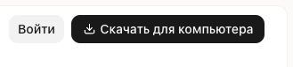
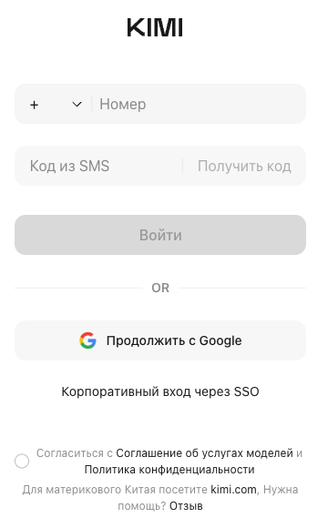
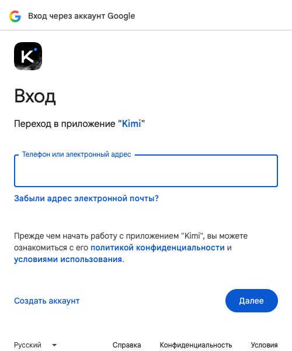
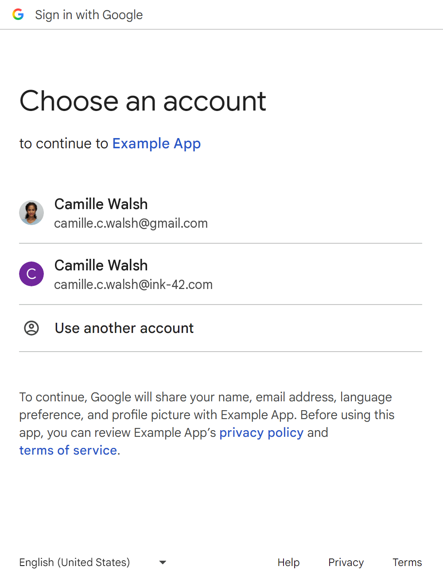
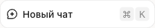
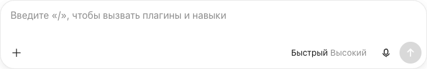
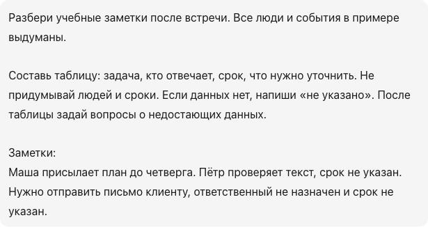
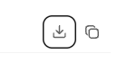

Кими · первый запуск
Кими: как войти и начать пользоваться без путаницы
Начальный уровень
Кими Чат, Дизайн, Код и Ворк похожи по названиям, поэтому непонятно, что открывать и нужно ли всё устанавливать. Начни с чата в браузере: здесь разберём вход через Google, превратим заметки после встречи в таблицу задач и отделим чат от программ для файлов и кода.
Содержание статьи
1. Как начать пользоваться Кими
1.1. Вход через Google
Вход нужен при первом посещении или после выхода из аккаунта. Если Кими уже открыт под твоим аккаунтом, переходи сразу к новому чату.
Этот маршрут показан в браузере на компьютере. На Windows и Mac устанавливать Кими для него не нужно; мобильные приложения для iPhone и Android здесь не разбираем.

- На kimi.ai нажми «Войти» справа вверху. Откроется панель с полем телефона и кнопкой Google под разделителем OR («или»).
- Под способами входа есть круглый элемент согласия с условиями. Открой ссылки на соглашение и политику; если условия подходят, отметь этот элемент и нажми «Продолжить с Google».
- Если Google показывает список аккаунтов, выбери свой. Если появляется поле «Телефон или электронный адрес», введи свою почту Google и нажми «Далее», затем выполни подсказки Google для входа. После возвращения в Кими вместо «Войти» появится имя или значок аккаунта: история разговоров будет сохраняться.



Если открылась китайская форма с QR-кодом и нет кнопки Google, введи в адресной строке именно kimi.ai. На форме международной версии есть отдельная ссылка на kimi.com для материкового Китая.
1.2. Новый чат и первый запрос
После входа нажми «Новый чат» в верхней части левой колонки. Откроется пустой разговор с большим полем для сообщения.

Поле сообщения находится в центре страницы, под надписью KIMI. Нажми внутри белого поля с подсказкой про плагины и навыки: здесь появится текст твоего запроса.

Попробуем разобрать короткие заметки после встречи: Кими разложит поручения по людям и срокам. Нажми «Скопировать» справа сверху карточки запроса, затем нажми на большое поле сообщения в Кими и вставь текст: Ctrl+V на Windows или ⌘+V на Mac. Пока не отправляй его.
Цветом выделены вводные и заметки, которые заменяешь своими данными. Для учебной пробы оставь текст как есть.
Разбери учебные заметки после встречи. Все люди и события в примере выдуманы.
Составь таблицу: задача, кто отвечает, срок, что нужно уточнить. Не придумывай людей и сроки. Если данных нет, напиши «не указано». После таблицы задай вопросы о недостающих данных.
Заметки:
Маша присылает план до четверга. Пётр проверяет текст, срок не указан. Нужно отправить письмо клиенту, ответственный не назначен и срок не указан.Нажми Enter или кнопку со стрелкой вверх справа внизу поля сообщения. Дождись ответа: Кими покажет таблицу с задачами, ответственными и сроками.

В нашем примере был выбран пункт «Быстрый» с интенсивностью рассуждений «Высокий». Номер модели за этим пунктом интерфейс не показывает.
Ответ Кими: три задачи. Ниже содержимое полученной таблицы в виде списка, чтобы оно читалось и на телефоне.
Прислать план. Кто отвечает: Маша. Срок: до четверга. Что уточнить: точную дату и время четверга, кому и в каком виде присылать план.
Проверить текст. Кто отвечает: Пётр. Срок: не указан. Что уточнить: срок проверки.
Отправить письмо клиенту. Кто отвечает: не указан. Срок: не указан. Что уточнить: ответственного, срок, текст письма и адресата.
Вопросы под таблицей:
- К какой именно дате и времени относится «до четверга»?
- Какой срок у Петра на проверку текста?
- Кто отвечает за отправку письма клиенту и к какому сроку?
- Кому именно отправлять план и письмо: конкретному клиенту, адресату или в чат?
- Есть ли готовый текст письма и требования к плану?
Кими не превратил слово «четверг» в подтверждённую дату. В строке Маши остался срок «до четверга», а в столбце уточнений появилась фраза «точная дата/время четверга». Вопрос «К какой именно дате и времени относится “до четверга”?» полезнее, чем автоматически поставить задачу на ближайший четверг: из заметок неясно, о какой неделе шла речь.
Сверь ответ со своими заметками: все поручения попали в таблицу, имена не перепутались, отсутствующие сроки не превратились в обещания.
Таблицу можно скачать в формате CSV. Это файл с табличными данными, который открывают в Excel или другой программе для таблиц.
Чтобы сохранить свою таблицу, наведи указатель на таблицу: над её правым краем появятся значки. Значок «Скачать» выглядит как стрелка вниз. Нажимай Tab, пока рамка выделения не окажется на этом значке, затем нажми Enter: браузер сохранит файл с окончанием .csv.

Скачанный файл называется table с числом и окончанием .csv; точное число будет другим. Обычно он сохраняется в папку «Загрузки». Если браузер предложил выбрать папку, файл будет в выбранном месте. Ниже есть копия нашей учебной таблицы для скачивания.
У таблицы есть особенность при сохранении: в скачанный из ответа файл CSV попали четыре столбца и три задачи, а пять вопросов под таблицей остались только в чате. Если передаёшь коллегам только файл, отдельно скопируй вопросы под таблицей: без них часть уточнений потеряется.
2. Что выбрать для дизайна, файлов и кода
| Твоя задача | Что открыть |
|---|---|
| Задать вопрос, разобрать текст или приложенный документ. | Обычный чат на kimi.ai. |
| Подготовить постер или инфографику. | Дизайн (Design). В официальной галерее Кими показаны постеры с текстом и изображениями, а также инфографика с цифрами и диаграммами. Это примеры визуального результата; генерацию дизайна в этой инструкции не разбираем. |
| Поручить работу с папкой на своём компьютере. | Kimi Work, отдельное приложение. Оно работает с выбранной локальной папкой и сохраняет результат на диск. На странице загрузки указаны Windows и Mac с процессором Apple. |
| Разбирать и менять код проекта. | Kimi Code. У него есть приложение и расширение для VS Code, программы для работы с кодом. Это направление для разбора и изменения файлов проекта; для нашего списка поручений оно не нужно. |
Разница между чатом и Work - в месте, где лежат файлы. В чат ты передаёшь выбранный текст или вложение; Work получает доступ к папке на компьютере и может работать с файлами внутри неё. Не стоит устанавливать Work только ради ответа на один вопрос: официальное руководство Work предназначено уже для задач с локальными файлами.
3. Навыки и подключения
Для первой таблицы из этой статьи дополнения не понадобились. Они полезны, когда ты регулярно повторяешь одну работу или хочешь, чтобы Кими использовал данные из другого сервиса. Разберём три названия, которые встретятся в его меню.
Скилл, или навык (Skill), - готовая инструкция для определённой работы. В ней описано, какие шаги пройти и как оформить результат. Например, каждую неделю тебе нужен отчёт с одинаковыми разделами: что сделано, что задерживается, что дальше. Навык хранит этот порядок, чтобы не объяснять его заново в каждом запросе.
Навыки бывают готовыми и своими. У Кими есть навыки для документов Word и исследований, а свой можно создать под шаблон отчёта, писем или протоколов встреч. Он нужен, когда важен повторяемый порядок работы. Для разового вопроса обычно достаточно обычного запроса.
MCP-подключение связывает нейросеть с внешней программой или источником данных. MCP - название стандарта такого подключения. Оно определяет, к каким данным и действиям Кими сможет обращаться: например, к рабочим страницам в Notion, где команда хранит заметки и документы, или к базе финансовых данных.
Представь, что заметки встречи лежат в Notion. Без подключения ты копируешь их в чат вручную. Подключение позволяет работать с доступными ему страницами сервиса. Какие именно страницы и действия будут доступны, зависит от подключения и выданных разрешений. Само название MCP не означает доступ ко всему аккаунту.
Плагин (Plugin) - устанавливаемый набор дополнений под сервис или задачу. Он может объединять подключение и навык. В официальном примере Кими плагин Notion содержит MCP для связи с Notion и навык с инструкциями по его использованию. То есть один компонент даёт доступ к сервису, другой объясняет порядок работы.
В каталоге есть плагины для рабочих документов, дизайна, разработки и финансовых данных. Например, Notion относится к работе с документами, Canva к дизайну, GitHub к проектам с кодом. Выбирать стоит по своему сервису и задаче, а не по длине списка возможностей.
Откуда их берут. Готовые плагины находятся во встроенном каталоге Кими, навыки в панели Skills («Навыки»). Для начала проще смотреть эти каталоги, а не искать архивы по всему интернету. Свой навык можно получить из описания работы или готового документа-шаблона. Подробный порядок есть в инструкции по выбору и созданию навыков и инструкции по установке плагинов.
Что выбрать тебе. Сначала попробуй выполнить свою задачу обычным запросом. Если каждый раз заново объясняешь один и тот же порядок, присмотрись к навыку. Если нужные данные остаются в другом сервисе, ищи подключение к этому сервису или плагин, в который оно уже входит. Устанавливать всё сразу не нужно.
Набор доступных дополнений зависит от версии Кими и региона; некоторые требуют подписки. При подключении внешнего сервиса проверь, какие данные он разрешает читать и менять. Для обычного запроса из этой статьи доступ к сторонним аккаунтам не требуется.
4. Бесплатный доступ и цены
В международной версии Кими есть бесплатный план Free за $0 и четыре платных плана. Ниже цены, показанные в международном аккаунте 17 ноября 2026 года. Валюта - доллары США.
| План | Оплата за месяц | Оплата за год |
|---|---|---|
| Free | $0 | $0 |
| Plus | $19 | $180 |
| Pro | $39 | $372 |
| Max | $99 | $948 |
| Ultra | $199 | $1908 |
При годовой оплате Кими показывает цену в пересчёте на месяц: $15 для Plus, $31 для Pro, $79 для Max и $159 для Ultra. Например, надпись «$15 в месяц» у Plus означает оплату $180 за год. Это не помесячное списание по $15.
Что можно бесплатно. В сравнении планов для Free указаны одна одновременно выполняемая задача, два проекта и 500 МБ хранилища проектов. План подходит для знакомства с сервисом; платные возможности и больший объём работы в него не входят целиком.
За что платят. Plus добавляет объём работы, доступ к Kimi Code и плагины для подписчиков. У Pro, Max и Ultra больше кредитов, которыми сервис учитывает работу, и дополнительные возможности. Для первого списка поручений нет причины сразу выбирать самый дорогой план: сначала попробуй обычную задачу, затем оцени, каких возможностей или лимитов тебе не хватает.
Актуальные суммы и сравнение возможностей находятся на международной странице тарифов Кими. Проверяй там выбранный период оплаты перед покупкой.
Доступ и оплата из России. Вход без VPN не подтверждён: у нас без VPN зайти на сайт Kimi AI не получилось.
Редакция «Код.ру» подтвердила оплату картой «Мир»: подписка за $19 обошлась в 1652 ₽. Это сумма конкретной оплаты, а не фиксированная цена в рублях.
Рублёвая сумма зависит от курса пересчёта на дату оплаты. Кто именно устанавливает этот курс - банк или платёжный сервис - не подтверждено.
5. Частые вопросы
Нужно устанавливать Кими, чтобы попробовать?
Для запроса из этой статьи достаточно браузера и входа на kimi.ai. Kimi Code и Kimi Work для него не нужны.
Кими понимает русский?
Да. В учебном примере и запрос, и ответ на русском: получились таблица задач и вопросы о недостающих договорённостях.
Kimi Work - это режим внутри чата?
Kimi Work сейчас отдельное приложение для работы с локальными файлами и браузером. Его не следует путать с инструментами документов и таблиц в веб-версии.
Навыки и MCP есть только в Kimi Code?
Нет. Они есть и в веб-версии. Для веб-плагинов справка Кими указывает модели K3 и K3 Swarm, а также глубокое исследование (Deep Research), создание сайтов и приложений (Build) и презентации (PPT). Доступность конкретного дополнения зависит и от плана аккаунта.
Какие документы можно передать в чат?
Кими поддерживает PDF, документы Word, таблицы Excel и обычные текстовые файлы. Форматы перечислены в официальной справке; для учебного примера из этой статьи весь материал уже находится в сообщении.
6. Источники
- Кими: чат, модели и прикреплённые материалы.
- Кими: как описывать задачу в запросе.
- Kimi Work: проекты и работа с локальными файлами.
- Kimi Work: версии для компьютера.
- Kimi Code: варианты работы с кодом.
- Кими: плагины, навыки и MCP.
- Кими: международные тарифы и сравнение планов.
- Кими: официальные примеры постеров и инфографики.
- Google Chrome: сочетания клавиш на Windows и Mac.
Интерфейс и учебный запрос проверены 16 ноября 2026 года. Приложения Work и Code в этом примере не устанавливались.
Хочется поручать нейросетям больше повседневных задач?
Что можно делать с нейросетями, если не знаешь кода?
Чтобы почувствовать размах, посмотри Концентрат Ивана Сергеева в записи. ИИ-агенты на твоих глазах собирают продукт, контент, сайты и воронки без кода. Это основа под любую цель: свои услуги, партнёрка, чужой бизнес. Три вечера в записи, промпты и четыре скилла. 990 ₽ один раз. Доступ на 14 дней после оплаты.
Забрать КонцентратУже знаешь, чего хочешь? Тогда в мастер-группу Ивана: система продаж на ИИ без продюсера и технаря, сопровождение и сообщество
Заполнить анкету предзаписиНабор открывается редко, кто записался заранее, получает лучшую цену и бонусы. Платить сейчас не нужно
Реклама. ИП Сергеев И. С., ИНН 352511695540. erid: 2Vtzqwfc8iA